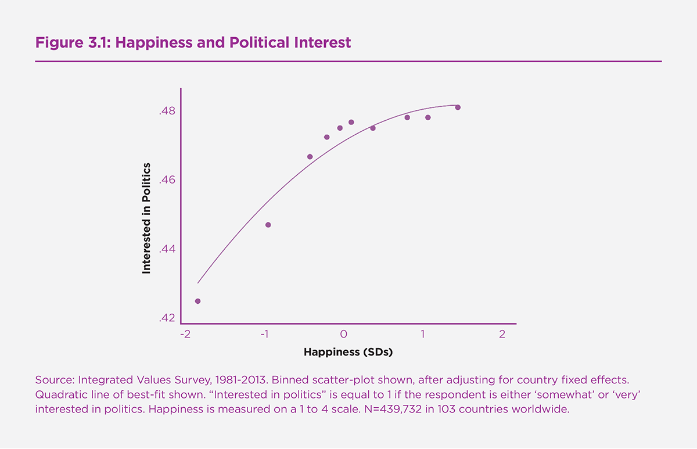
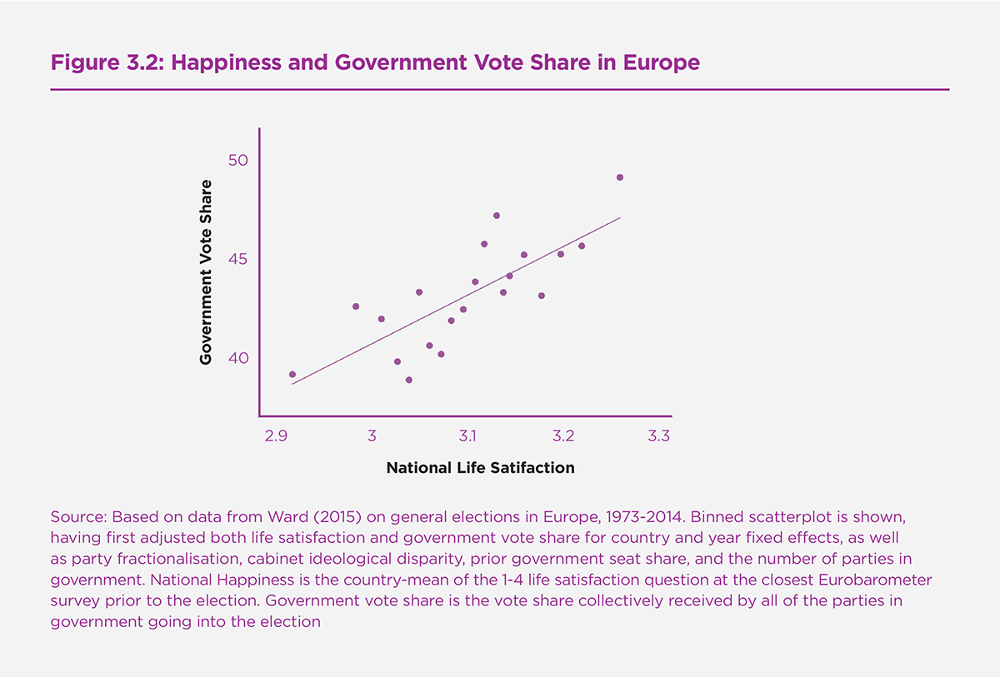
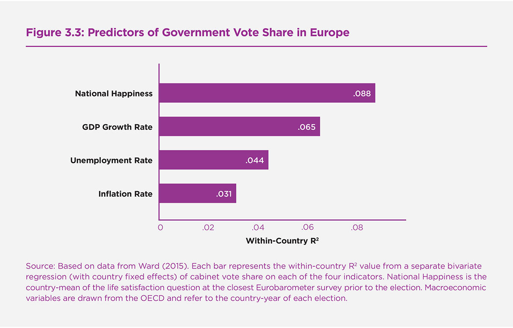
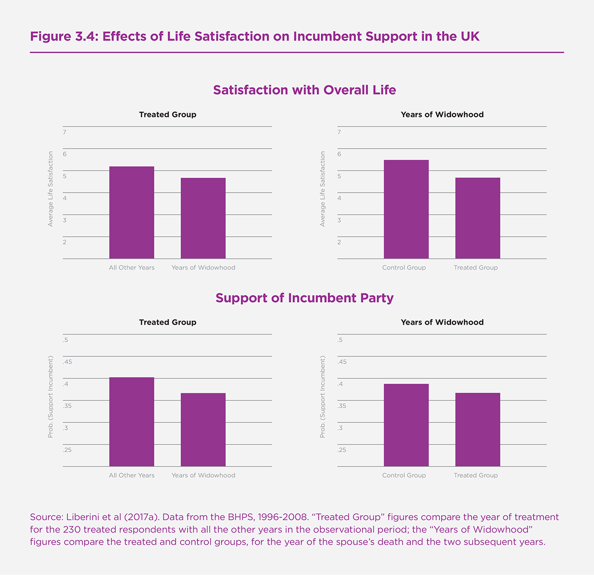
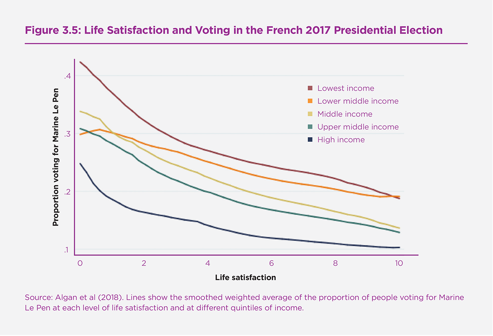
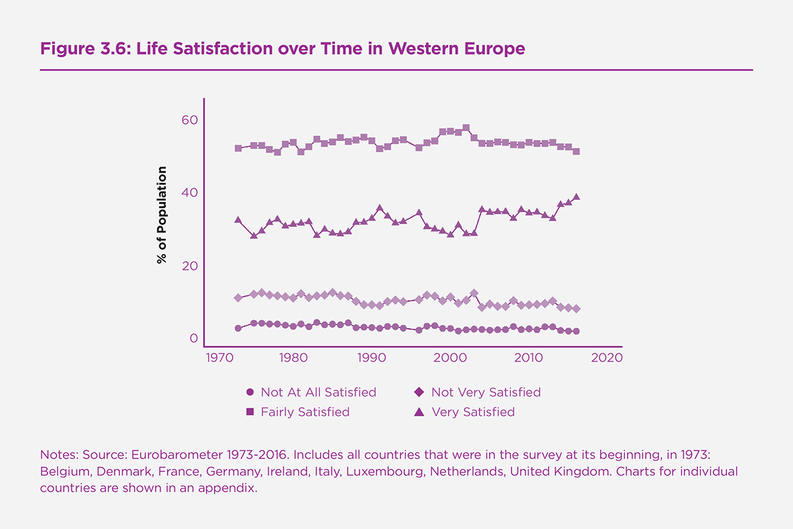
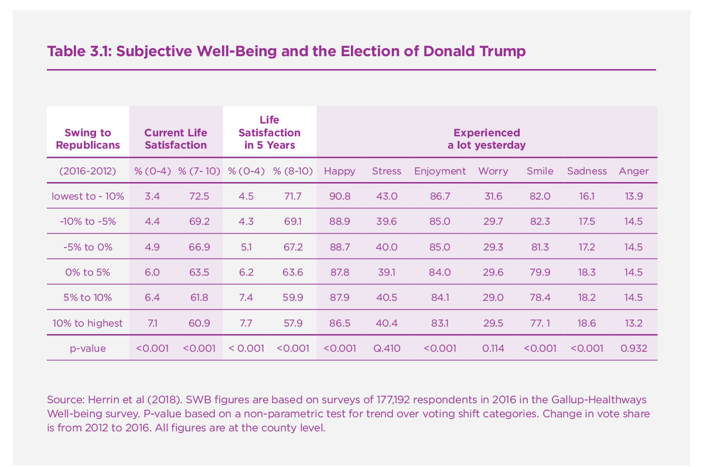
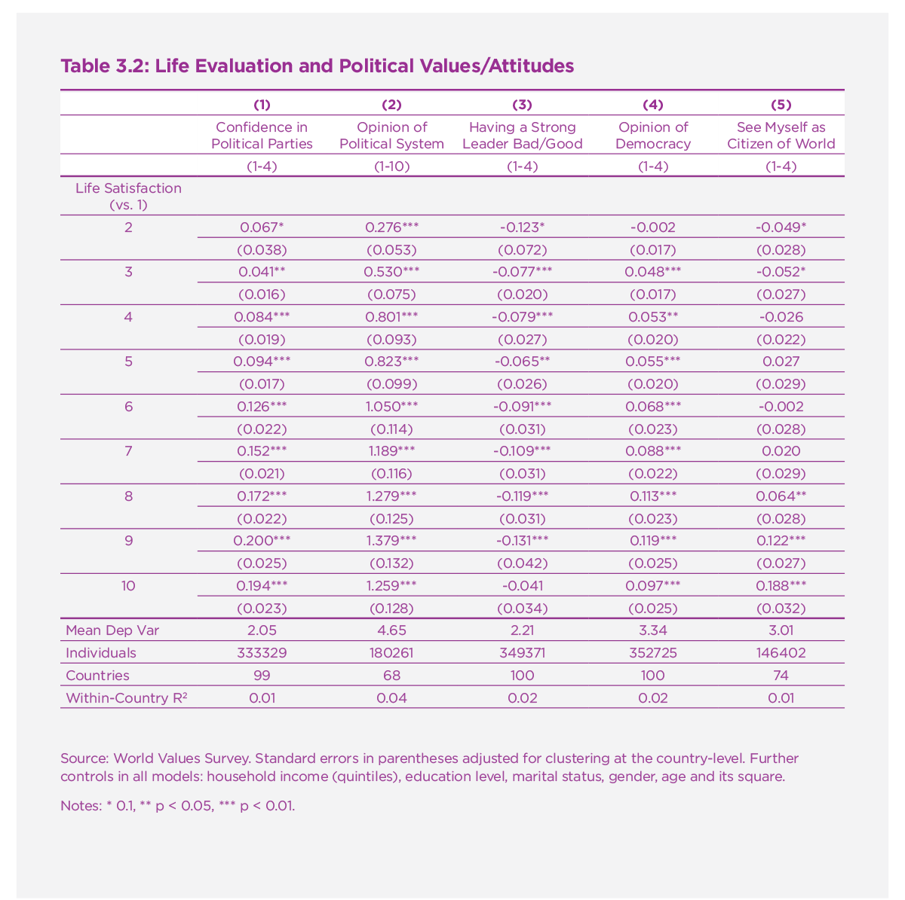

Happiness and Voting Behavior
Introduction
The idea that policymakers should aim for something beyond GDP is far from new, but it has regained prominence in recent years. A growing contingent of governments and international organisations are beginning to focus their attention on the subjective well-being (SWB) — or “happiness” — of citizens.[1] Some governments now produce national well-being statistics, while many others also go further and use SWB data and research to inform their policymaking decisions. Yet, despite this nascent change in the way many governments are going about the way they formulate and evaluate public policy, relatively little is known about the ways in which the SWB of citizens influences their behaviour in the political sphere.
This chapter reviews some of the research on SWB and political behaviour, and assesses the evidence for some of the key questions that arise within the literature. For example, are happier people any more or less likely to engage with politics and, when it comes to it, turn out to vote? And if so, does their level of happiness influence whom they ultimately vote for? In particular, are happier people any likelier to vote to re-elect governing parties? And to what extent might levels of (un)happiness play a role in driving support for populist and authoritarian politicians?
One of the overarching themes that arises from the chapter is that although the existing literature on happiness and political behaviour is somewhat small, the issues are nevertheless of pressing significance for policy. In many ways, research in the social and behavioural sciences currently lags behind developments in the real world of government and public policy. Directions for future research abound and, in reviewing the small number of existing studies on SWB and voting, the discussion points towards various potentially fruitful directions for further investigation in the area.
Most of the existing literature on politics and happiness relates to the ways in which political institutions and processes affect people’s happiness, thus treating happiness as an outcome (or dependent) variable. But much less is generally known about the effects of individual and societal happiness on political behaviour and outcomes. Many of the open questions involve happiness as a causal force — an input (or independent) variable predicting and possibly producing political behaviours. It is on this issue that the chapter is focused.
A number of topics fall outside of the scope of the chapter. Principal among these is the aforementioned research into the effects on happiness of political processes and outcomes like democracy, participation, governance quality, and particular government programmes and policies.[2] Likewise, the discussion leaves aside the issue of whether being a liberal or a conservative makes people any more or less happy,[3] as well as the extent to which the winning and losing of elections affects the happiness of partisans.[4] Equally, the discussion does not generally review the literatures on the correlates of satisfaction with democracy or emotional responses to specific candidates or the role of discrete emotions like fear, anger and hope in the political process,[5] and focuses rather on the effects of core dimensions of overall subjective well-being — principally, life satisfaction — on political behaviour.
Are happier people more likely to be engaged with politics?
A large and long-running literature in political science has studied the determinants of political participation.[6] Relatively little attention has been paid, however, to the extent to which subjective well-being may be one of the factors influencing whether people vote in elections, or engage with politics in other ways such as donating time and money to political campaigns.
From a theoretical standpoint, one might imagine the effects of happiness on participation to be ambiguous. On the one hand, people who are more satisfied with their lives may feasibly disengage from politics, having already reached a level of comfortable apathy. In this sense, it has been speculated that raising happiness could lead to “an emptying of democracy”.[7] But on the other hand, a growing literature on the “objective benefits of subjective well-being” has shown that happiness can have important effects on a variety of pro-social behaviours.[8] Happier people are, for example, more likely to volunteer in the community and donate money to charity. But does this extend to engagement in the political sphere?
One answer to this question uses data from the American National Election Survey (ANES),[9] which in 2000 included a question asking respondents: “In general, how satisfying do you find the way you’re spending your life these days? Would you call it completely satisfying, pretty satisfying, or not very satisfying?” The long-running survey also included its regular questions on participation, including whether or not the respondent voted, contributed or worked for a political campaign, attended a rally, or engaged in other political behaviours.
The data on a sample of around 1,300 US citizens show a strong positive relationship between life satisfaction and turnout. This is true in the raw data, and remains the case when controlling for a wide range of confounding demographic factors typically known to drive turnout such as age, race, and education. Importantly, the association remains statistically and substantively significant over-and-above factors relating to political partisanship, ideology, and various measures of social capital such as inter-personal trust (which are themselves known to be well-correlated with SWB, as well as voting). In the authors’ most restrictive specification, the estimated coefficient on life satisfaction suggests that being ‘very satisfied’, as opposed to ‘not very satisfied’, is associated with a 6.7 percentage point change in the probability of voting – a magnitude that rivals that of education.
Along the same lines, other research has shown that in the United States people who are depressed are less likely to vote.[10] It has also been found using survey research that in rural China there is a positive correlation between happiness and voting in local village elections.[11] Panel data from the United Kingdom suggests that, as people become happier over time their propensity to vote also increases.[12] A one-point increase in life satisfaction is associated with a 2% increase in the propensity to vote in an upcoming election. However, the magnitude of this association is reduced greatly by the inclusion of other background variables associated with the probability of voting.
What about other forms of participation, beyond voting? The ANES data suggest that happier people are also more likely to participate in politics in the United States in other ways like working on political campaigns and contributing to political candidates. However, interestingly, there is no such significant relationship with more “conflictual” forms of political activity like protesting.[13] In German panel data that follows individuals from year-to-year, there is seemingly little systematic relationship between life satisfaction and non-voting forms of political participation.[14]
Although participation is perhaps the hitherto most studied outcome in the literature on the effects of happiness in the political sphere, there remains a great deal of room for further research in the area. In the first instance, there is a clear need for more empirical work using causal research designs. This may include laboratory and field experiments in which researchers directly seek to influence the SWB of randomly chosen groups or individuals, or (perhaps more feasibly) take advantage of natural experiments occurring in the real world.
In addition, a great deal more theoretical development is needed in order to more clearly understand any observed empirical link between happiness and participation. For example, what are the main mechanisms we would expect to be driving this relationship? Given these mechanisms, would we expect the relationship to vary in different institutional contexts? Or in different political contexts? Or according to different elements of subjective well-being, such as positive and negative affect? Might we also expect different types of people (rich or poor, old or young, high or low education, and so on) to be differentially influenced by their well-being when it comes to making participation decisions? Are there reasons to expect the relationship to be linear, or might we expect non-linearities like a tail-off at high levels of satisfaction or happiness? This important theoretical work will surely also lead to further empirical work.
In beginning to investigate the generalisability of the relationships observed in the current literature, it is instructive to turn here briefly to the World Values Survey – a large cross-national survey including respondents from over 100 countries worldwide – in order to shed some initial empirical light on the issue. Here it is possible to investigate the basic relationship between happiness and individuals’ self-reported “interest in politics”. The question has been asked in 310 national surveys in 103 countries since the early 1980s, alongside a 4-point overall happiness question. Figure 3.1 shows that very unhappy people are more likely to be disengaged from politics.[15] Happier people are more likely to be so, but this relationship flattens off at higher levels of happiness. Once a range of demographics such as education, marital status, age, and income quintiles are controlled for in a fuller regression specification, very happy people are around 9.3 percentage points more likely to be interested in politics than not at all happy people.[16]
Are happier people more likely to vote for incumbents?
While it is interesting to study the extent to which happiness affects whether or not people vote, it is perhaps even more important to understand whether it influences whom they vote for. As has been documented in previous editions of the World Happiness Report, a number of countries around the globe have begun to see subjective well-being as a major policy goal.[17] But do they have any electoral motivation to do so?
For a long time, the main measure of government success has been GDP. Despite movements in the direction of going ‘beyond’ such macroeconomic indicators, this is undoubtedly still the case for most if not all countries around the world. One perfectly good reason for this focus is the extensive evidence that governments are much more likely to be re-elected when the economy is doing well. A truly vast empirical research literature going back several decades in economics and political science on “economic voting” has shown this to be the case.[18] Economic voting is evident both at the individual level, where individuals with healthy household financial situations are more likely to profess a preference for governing parties. And also at the national level, where incumbent parties generally receive higher vote shares the more buoyant is the election-year economy.
The theoretical literature in political economy sharpens the (perhaps intuitive) point that by linking re-election chances to an outcome like the state of the economy, incumbent politicians are given powerful incentives to act on that set of issues.[19] Thus elections can be seen as a device for voters to “control” politicians. Knowing they will only be re-elected if the economy is doing well, incumbent politicians will make sure to work hard to ensure that this is the case – rather than spending their time, among other things, enriching themselves through corruption or pursuing pet projects that may be of little use to voters and what they care about.[20]
But what sort of incentives do politicians face exactly? If their re-election is dependent upon the economy above all else, it is not unreasonable for governments to concentrate their efforts there. But if their chances of re-election are tied to a broader set of outcomes, which might reasonably be measured using a more comprehensive measure of success like subjective well-being, then it follows that they will have strong incentives to focus their policymaking on individuals’ broader well-being.
Since the early 1970s, the Eurobarometer series of opinion surveys has included a four-category question on respondents’ overall life satisfaction, with answers ranging from “not at all” to “very” satisfied. Since the survey has taken place roughly twice a year, it is possible to link general election results to the national average life satisfaction of a country in the run-up to that election, and study the extent to which SWB is a predictor of election results (alongside other more standard measures).[21]
The research on this set of elections in 15 EU countries since 1973 suggests that, in the first place, the electoral fate of governing parties is significantly tied to the performance of the national economy. Using a standard model of economic voting, the data show that government vote share in these elections is associated positively with the election-year economic growth rate, and negatively with the unemployment rate.[22]
Over and above this, however, national average life satisfaction is significantly related to the vote share subsequently received by parties that go into the election as part of the governing coalition. Figure 3.2 shows this relationship graphically. Having adjusted for country and year fixed effects (as well as set of variables standard to the economic voting literature such as party fractionalisation and the number of parties in government), there is a clear and significant positive relationship between national life satisfaction in the run-up to general elections and the subsequent electoral success of governing parties. A one standard deviation increase in national life satisfaction is associated with nearly an 8 percentage-point increase in cabinet vote share. In a model including SWB together with the main macroeconomic indicators, one standard deviation increases in national life satisfaction and the economic growth rate are associated with roughly 6 and 3 percentage point gains for incumbent parties, respectively.
Figure 3.3 shows the fraction of the variance in cabinet party vote share that can be explained by a) national levels of life satisfaction in the months leading up to a general election and b) each of the standard macroeconomic indicators. In a bivariate regression, national SWB is able to account for around 9% of the variance in the incumbent vote within countries. Whereas economic growth—the more orthodox measure used in the literature on retrospective voting—explains around 6.5%.
While it is an interesting (partial) correlation, there is naturally a limit to what can be inferred from a cross-national regression of 140 or so elections. One concern is that the finding may be an example of an ‘ecological fallacy’ – that is, despite the aggregate relationship, individual voters may not actually vote on the basis of their happiness. A further concern is that the three main macroeconomic indicators included in the regression – GDP growth, unemployment, and inflation – are measured with error and may not fully capture the state of the economy. Any remaining association of government vote share and SWB could simply reflect this unmeasured bit of economic performance, and thus not really tell us a great deal beyond what is already known from the extensive literature on economic voting. Moreover, a major worry when seeking to attach a causal interpretation to the association between SWB and incumbent voting is that that any observed empirical relationship may simply reflect ‘reverse causality,’ since people are known to be happier on average when their chosen political party is in power.[23]
However, in an ingenious paper Federica Liberini and her colleagues provide support for a causal interpretation of the happiness-to-voting link.[24] They use longitudinal data from the British Household Panel Survey (BHPS), which follows individuals repeatedly on an annual basis. Between 1996 and 2008 the authors are able to track respondents’ life satisfaction on a scale of 1-7 and also their support for governing parties. Each year people were asked whether they support or feel closer to a particular party (and, if not, which party they would vote for were there a general election tomorrow). Using a sample of 4,882 individuals, the authors estimate regression analyses predicting whether or not the respondent reports supporting a political party that was in power at the time of the survey.[25] The data show a significant relationship between life satisfaction and incumbent support. This remains the case when looking within-individuals over time, and thus controlling for a wide range of potentially confounding permanent factors between people (such as some elements of attitudes, personality, social class, and so on). Controlling for individual and year fixed effects as well as time-varying individual demographics like age and marital status, becoming satisfied with life (i.e. answering at least 5 out of 7) makes people around 1.9 percentage points more likely to support the incumbent party.
It is well-established in the academic literature that happiness is influenced by economic circumstances. In the BHPS data household income and subjective financial situation (whether household finances have stayed the same, gotten better, or worse over the past year) are positively related to incumbent voting over time, as we would expect from the extensive prior literature on economic voting. However, even controlling for these financial factors, being satisfied with life makes people 1.6 percentage points more likely to support the incumbent.
Importantly, the authors also leverage an exogenous “shock” to people’s happiness, which allows them to consider the relationship between SWB and voting in a quasi-experimental setting and, ultimately, attach a causal interpretation to the relationship. They observe the happiness and voting patterns of individuals who become widowed, an event which on the whole should not be directly attributable to the actions of incumbent government politicians.[26] As can be seen in Figure 3.4, widowhood reduces both happiness and government support.[27]
Away from the United Kingdom, but also at the individual level, life satisfaction is significantly and positively related to the intention to vote for a governing party in a survey of voters in the run-up to the 2013 general election in Malaysia.[28] At the national level, the average happiness of countries using the Latinobarómetro survey is positively related to national governments’ re-election chances in subsequent Presidential elections.[29]
Taken together, the emerging evidence suggests that there is a causal relationship between happiness and incumbent voting. However, there remains a large amount of room and need for further research in the area.
One obvious omission from the existing literature is the use of alternative measures of SWB. Currently the evidence shows a strong relationship between life satisfaction and voting (both the decision whether to vote and whom to vote for). But there may well be differences between evaluative SWB and more emotional measures such as positive and negative affect. A further dimension here is temporal – it may well be that people’s feelings about the future have a stronger role to play in determining voting behaviour than current SWB. Use, for example, of the “Cantril Ladder in 5 years” measure may be of interest to researchers in the coming years.
In general, a great deal more theoretical work is needed in order to better understand and rationalise existing findings (as well as to point towards directions for further empirical research). While studies have sketched formal models of retrospective voting in which voters observe their own wellbeing in order to update their beliefs about the quality of incumbent politicians,[30] these are otherwise typically relatively standard political agency models. The principal difference is that the empirical work focuses on assessing the extent to which the use of SWB as a proxy for (experienced) utility in the model tells us any more than using financial indicators as a proxy for the more standard notion of (decision) utility. However, much more could in future be said about the ways in which the two may be expected to behave differently, as well as potentially interact with each other. The existing research suggests that both people’s financial situation and their happiness have independent effects on their voting intentions – thus one potential avenue for further theory could be to use a multitask framework where politicians face (potentially competing) incentives to improve both the material and non-material well-being of voters.
Currently the literatures on i) SWB and participation and ii) SWB and incumbent voting are largely separate. Further research will likely synthesise these two processes, since ultimately the act of voting for a particular candidate is likely to be a two-step process. In the first step, people decide whether or not to vote. And in the second, they decide whom to vote for. Both may be equally important in determining electoral outcomes.
Another important area of empirical and theoretical development will likely seek to understand what might be thought of as a third (initial) step – “step zero” – in this progression, namely the process of attribution for outcomes. On the one hand, one might see a voter’s decision to base an electoral choice on her level of happiness as a rational response to a substantive policy outcome - namely, her welfare under the current government. But on the other hand, evidence of well-being affecting voting could equally be seen as evidence of behavioural or emotional bias in the electoral process. One key question here is whether or not voters distinguish between policy-relevant and policy-irrelevant determinants of their SWB when it comes to making vote choices.[31] One might imagine, for example, that people attribute losses in subjective well-being to government action but gains to their own efforts and actions.[32]
The evidence on widowhood suggests that people are to some extent not able, or indeed willing, to filter relevant and irrelevant sources of happiness. Additional research suggests that incidental (i.e. non-relevant) mood can play a role in swinging political outcomes – for example it has been shown in the United States that incumbents benefit in terms of vote share following local college football wins.[33] In addition, weather has been shown to affect voting patterns in ballot propositions in Switzerland, with rainfall decreasing vote shares for change.[34] Further theoretical work is needed in order to determine the extent to which, and the conditions under which, this kind of behaviour weakens or strengthens the incentives faced by incumbent politicians.[35] In other words, if people are using their well-being as a heuristic that helps them to update their beliefs about incumbents, when does and doesn’t this lead them astray? Ultimately, the over-arching theoretical question to be addressed in this area is the extent to which happiness-based voting is likely to be welfare-enhancing overall.
Are unhappier people more likely to vote for populists?
Populism is far from new.[36] But the past decade has seen a significant rise in the prominence of populist political movements, particularly in Western Europe where parties like The League and Five Star Movement in Italy, Front National in France, and the AfD in Germany have gained significant electoral ground, with some now having entered into governing coalitions at both the regional and national levels. Elsewhere, populist parties in countries like Austria, Greece, Hungary, Poland, the UK and further afield have also been rising to prominence and power.
There is no single definition of populism, making its measurement and empirical study problematic. Perhaps the key aspect of populist ideology – which spans various different definitions – is an anti-establishment worldview.[37] Populist politicians typically distinguish between the virtue of “ordinary” people on the one hand, and the corrupt “elite” on the other. Related themes in the study of the recent rise in populism have also included a growth in the success of parties promoting nativist or nationalist sentiment, as well as an opposition to – or rejection of – cosmopolitanism and globalisation.[38]
An obvious question arises from this recent political trend: is this all a manifestation of rising levels of unhappiness? Indeed, if pressed to describe one thing that brings these different political movements and parties together, one feature that stands out is that they all share a certain discontent - or unhappiness - with the status quo in their respective countries.
Yann Algan and his colleagues leverage a unique survey dataset of 17,000 French voters in the 2017 presidential election, which saw a radical redrawing of the French political landscape.[39] Figure 3.5 shows the relationship in the data between life satisfaction and voting for Marine Le Pen’s right-wing populist candidacy, which made it through to the second-round of voting. Happier individuals were much less likely to have voted for her, across all income levels. Indeed, of all of the main candidates, Le Pen voters were on average the least satisfied with life. Mélenchon voters were more satisfied, though not a great deal more so. However, voters of the two more establishment candidates - Macron and Fillon – had on average much higher life satisfaction.[40] Ultimately, the research suggests that standard social and economic variables are not sufficient to explain or understand the rise in support for the far-right in France. The common factor among the disparate groups of Le Pen voters was their low levels of current subjective well-being, and a general sense of pessimism about the future.
A growing number of studies have begun to examine the determinants of two other noteworthy electoral events in which populism is often said to have prevailed: the 2016 Brexit vote in the United Kingdom and the election of Donald Trump in the United States. Were these, again, instances of an unhappy populace venting its frustration with the establishment?
Eleonora Alabrese and colleagues use large-scale survey data in the UK Understanding Survey to assess the extent to which subjective well-being predicted the Brexit vote.[41] Using a sample of around 13,000 respondents, they assess the extent to which a number of different variables at the individual and aggregate level are predictive of leave voting. They find a strongly significant association between life satisfaction and leave support – those who were dissatisfied with life overall were around 2.5 percentage points more likely to answer yes to the question of whether the UK should leave the European Union. This is true both at the individual-level and at the aggregate local-authority level, where the percentage of people dissatisfied predicts the leave vote.
Federica Liberini and colleagues also use data from the UK Understanding Society survey to show the same thing: that, all else equal, people with lower levels of life satisfaction were more likely to be Leave voters.[42] However, they also show that this unhappiness was not the main driver of leave support in the data – rather, measures of subjective financial insecurity were able to explain more of the variance in support for the United Kingdom leaving the European Union.[43]
In the United States, the Gallup Organization has for the past decade surveyed a large random sample of US residents every day on a number of topics, including various aspects of their subjective well-being. Aggregating well-being measures like life satisfaction and the experience of different emotions day-to-day to the county-level, Jeph Herrin and colleagues find a strong correlation in the raw data between area-level SWB and shifts in the Republican vote share.[44] Table 3.1 shows their main finding of a correlation between SWB and Trump voting. The authors split counties into 6 categories, according to the percentage point electoral shift from 2012 to 2016, and relate these to county-level SWB measures.[45] As can be seen, a higher percentage of people placing themselves near the bottom of the Cantril ladder - both currently and in 5 years’ time – is significantly associated with larger swings towards the Republican Party. In counties where the Romney to Trump swing was smaller than -10 percentage points, only 3.4% of people were of low life satisfaction (0-4 on the 0-10 scale). But in strong Trump voting areas (where the swing was greater than 10 percentage points) this more than doubles to 7.1%.
Similarly, feelings of happiness, enjoyment, smiling and laughter were associated with smaller Republican swings. Perhaps surprisingly, negative emotions like stress, anger, and worry were not significantly associated with voting patterns, however. The results are highly suggestive, but much more work is needed in order to assess the extent to which these patterns are more or less predictive of the election outcome than more standard economic and demographic factors, and, importantly, whether they contribute any explanatory power over-and-above such factors in a multivariate regression framework.[46]
As yet, the evidence on SWB and populism is confined to a small number of noteworthy political events. To what extent do these findings translate to other countries and time periods? In order to attempt to shed some suggestive empirical light on the question of (un)happiness and populism (and/or authoritarianism), it is useful to turn to the World Values survey (WVS), which has since the early 1980s included questions on both SWB and people’s political attitudes and beliefs. The empirical analysis here looks in turn at five different attitudes and seeks to investigate their relationship with both life satisfaction and general happiness.[47]
Columns 1 and 2 of Table 3.2 assess the drivers of i) respondents’ confidence in established political parties as well as ii) their overall assessment of the current political system in their country. Both measures are likely to tap into the anti-establishment ideas lying behind populist rhetoric and the general mistrust of the elite.[48] As can be seen in Table 3.2 life satisfaction is associated with each of the two anti-elite/ anti-establishment variables.[49] Unhappy respondents have the least faith in political parties and the political system as a whole in their country.[50] For example, those least satisfied with their lives have an opinion of the political system that is nearly 1.3 points (on a 1 to 10 scale) lower than the most satisfied, holding constant other important factors like income, age and education.[51]
Columns 3 and 4 move on to the issue of authoritarian attitudes and beliefs. Here there is a clear relationship between satisfaction with life and respondents’ opinion of the benefit of having a strong leader. The unhappiest among the survey respondents are the most likely to say that having a strong leader in charge would be good for the country.[52] A similar relationship between happiness and authoritarian beliefs is evident when respondents are asked of their opinion of democracy in general. Coefficients for the full set of control variables are reported in an appendix, and show a particularly strong effect of education. In predicting both support for strong leaders and opinions of democracy, being of high education (as compared to low) is associated with over a 2-point difference on each of the 1-4 scales.
Finally, column 5 attempts to tap into concepts of nativism versus cosmopolitanism. Again, a clear relationship is found with subjective well-being. Holding constant a variety of factors like age, income, and education, the unhappiest people across the countries included in the WVS are most likely to more strongly reject the idea of being a citizen of the world.
So, does this mean that rising unhappiness is driving the rise in populism? The issue is not entirely clear-cut, mainly because in the longest-running source of data for countries where populist parties have made the most gains over the past decade, there appears to be very little evidence of a general decrease in life satisfaction. Figure 3.6 looks at the 9 countries that have been in the Eurobarometer from its inception in 1973, and plots the percentage of the population answering in each of the four life satisfaction categories. As can be seen, there is no evident dramatic uptick in the number of people declaring themselves to be either “not at all” or “not very” satisfied with their lives.[53] Similarly, Chapter 2 of this report finds that levels of life evaluation have remained relatively steady over the past decade and, if anything, have risen over the past few years.
A puzzle thus arises as to why it is that a) unhappier people seem to hold more populist and/or authoritarian attitudes, but b) the recent rise of populism seems difficult to explain by any rise in unhappiness overall. Future research is needed in order to understand these issues more clearly - both in Europe (the region on which much of the discussion here is focused) as well as, importantly, elsewhere around the world.
One strong hypothesis is that although there has been little rise in unhappiness in terms of life satisfaction, it may be that a significant rise in levels of negative affect (or a drop in positive affect) is driving the rise in populism support.[54] Chapter 2 of this report documents a concerted rise over the past decade in levels of negative affect – a measure that is made up of the average frequency of worry, sadness and anger – all over the world. In Western Europe, where populist parties have made significant gains, there has been a significant rise in these negative emotional states since 2010.[55] Future work should look more closely by country (and by region within countries) at the relationship, if there is one, between such measures of negative emotional states and populist party vote shares at general elections. Additionally, research should investigate the potential effects of future expectations of well-being on populist voting.
An alternative - or more likely complementary - explanation may be that the current rise in populism is not best explained by demand-side factors (i.e. unhappiness), but rather on the supply-side of populist politics. If this is the case, one important and interesting line of research may attempt to study the extent to which populist politicians have successfully developed ways of appealing to – and “tapping into” – the existing well of unhappy people. The use of (increasingly sophisticated) methods like sentiment analysis on the text of speeches and other campaign materials by populist and non-populist politicians, for example, may provide a highly fruitful avenue of further research in this regard.[56]
A related hypothesis is that while unhappy people may have long been favourable to populist ideas, other cultural and societal factors have changed over the past few decades that have allowed for this unhappiness (pent-up demand) to be now “activated” in the political sphere. For example, some candidate variables in this regard might include: the secular decline across the Western world in general deference, the rise of social media as a source of information, or the loss of credibility that elites suffered following the financial crisis in 2008 (or other public policy mismanagements).
A final possibility could be that it is not the average level of well-being that is driving changes in support for populist political movements, but it rather has to do with the variance of SWB (i.e. wellbeing inequality) – work in the future in this regard might explore the explanatory power of measures like the standard deviation of happiness rather than the mean in predicting populist electoral success.[57] It is worth noting, however, that the evidence presented in Chapter 2 of this report suggests that there has been no significant increase in well-being inequality in Western Europe over the past decade.
Conclusion
Happier people are not only more likely to engage in politics and vote, but are also more likely to vote for incumbent parties. This has significant implications for the electoral incentives that politicians face while in office. There appears to be a significant electoral dividend to improving societal happiness, beyond ensuring a buoyant economic situation. Governments around the globe that are moving in the direction of focusing their policymaking efforts on the population’s broad well-being are not only doing so to improve people’s happiness for its own sake, but they also appear to have electoral reasons to do so out of enlightened self-interest.
The empirical evidence that exists is currently largely focused on correlations between happiness and voting behaviour – with influences likely to be running in both directions, or to be due to movements in some third factor. This has obvious drawbacks, and a significant area of further research will likely be focused on establishing the likely causal influences for the various relationships studied in this chapter.
Not only this, a number of further open questions – both theoretical and empirical – are surely of great interest both academically as well as in the policy sphere. For example, which domains or sources of people’s subjective well-being are most prominently driving the empirical association between happiness, the decision of whether to vote, and whom to vote for? If there are political incentives to focus policy on happiness, to what extent do politicians respond to them? Do people vote more on the basis of their own happiness or society’s happiness as a whole? Are people more likely to make vote choices based on SWB in countries where official happiness statistics are more prominently published? Does the relationship between well-being and voting differ when considering local and national elections? Do people reward (punish) left- and right-wing governments differently for the (un)happiness of the country? Are right- and left-wing voters equally likely to base their political decision-making on their level of happiness? To what extent, and how, have successful populist political movements managed to tap into people’s unhappiness? If it is true that unhappier people vote for populists, will populist incumbents be able to retain their support? And what makes some unhappy people turn to right-wing populism and some to left-wing populism?
Research into the links between happiness and political behaviour is still very modest in scale, but it is growing significantly. Given the increasing use of subjective well-being data in public policy, there is increasing interest in knowing if and why happiness affects voting behaviour. Open theoretical and empirical questions abound in the field, and it is likely that the literature will continue to grow over the coming years.
References
Alabrese, E., Becker, S. O., Fetzer, T., & Novy, D. (2018). Who voted for Brexit? Individual and regional data combined. European Journal of Political Economy, In press (available online August 2018).
Algan, Y., Beasley, E., Cohen, D. & Foucault, M. (2018). The rise of populism and the collapse of the left-right paradigm: Lessons from the 2017 French presidential election. CEPR Discussion Paper 13103.
Barro, R. J. (1973). The control of politicians: an economic model. Public Choice, 14, 19–42.
Besley, T. (2006). Principled agents? The political economy of good government. Oxford: Oxford University Press.
Blais, A. (2006). What Affects Voter Turnout? Annual Review of Political Science, 9: 111-25.
Blais, A., & Gélineau, F. (2007). Winning, losing and satisfaction with democracy. Political Studies, 55(2), 425-441.
Blais, A., Morin-Chassé, A., & Singh, S. P. (2017). Election outcomes, legislative representation, and satisfaction with democracy. Party Politics, 23(2), 85-95.
Clark, A. E. (2018). Four Decades of the Economics of Happiness: Where Next? Review of Income and Wealth, 64(2), 245–269.
Clark, A. E., Flèche, S., Layard, R., Powdthavee, N., & Ward, G. (2018). The origins of happiness: the science of well-being over the life course. Princeton University Press.
Curini, L., Jou, W., & Memoli, V. (2014). How moderates and extremists find happiness: Ideological orientation, citizen–government proximity, and life satisfaction. International Political Science Review, 35(2), 129-152.
Di Tella, R., & MacCulloch, R. (2005). Partisan social happiness. The Review of Economic Studies, 72(2), 367–393.
Dolan, P., Metcalfe, R., & Powdthavee, N. (2008). Electing happiness: does happiness affect voting and do elections affect happiness. University of York Discussion Papers in Economics 08/21.
Dolan, P., Peasgood, T., & White, M. (2008). Do we really know what makes us happy? A review of the economic literature on the factors associated with subjective well-being. Journal of Economic Psychology, 29(1), 94–122.
Durand, M. (2018). Countries’ Experiences with Well-being and Happiness Metrics. In J. Sachs (Ed.), Global Happiness Policy Report (pp. 200–245). Global Happiness Council.
Dustmann, C., Eichengreen, B., Otten, S., Sapir, A., Tabellini, G. & Zoega, G. (2017), Europe’s Trust Deficit: Causes and Remedies, Monitoring International Integration 1. CEPR Press.
Fair, R. C. (1978). The effect of economic events on votes for president. Review of Economics and Statistics, 60, 159–173.
Fearon, J. D. (1999). Electoral accountability and the control of politicians: selecting good types versus sanctioning poor performance. In A. Przeworski S. C.Stokes & B. Manin (Eds.), Democracy, Accountability, and Representation. Cambridge: Cambridge University Press.
Flavin, P., & Keane, M. J. (2012). Life satisfaction and political participation: Evidence from the United States. Journal of Happiness Studies, 13(1), 63–78.
Glaser, J., & Salovey, P. (1998) Affect in Electoral Politics. Personality and Social Psychology Review, 2(3): 156-172.
Healy, A., N. Malhotra, and C. H. Mo. (2010). “Irrelevant Events Affect Voters’ Evaluations of Government Performance.” Proceedings of the National Academy of Sciences, 29(107): 12804 -12809.
Healy, A., & Malhotra, N. (2013). Retrospective Voting Reconsidered. Annual Review of Political Science, 16, 285–306.
Herrin, J., Witters, D., Roy, B., Riley, C., Liu, D., & Krumholz, H. M. (2018). Population well-being and electoral shifts. PLoS ONE, 13(3).
Inglehart, R., & Norris, P. (2017). Trump and the populist authoritarian parties: the silent revolution in reverse. Perspectives on Politics, 15(2), 443–453.
Kaltwasser, C. R., Taggart, P. A., Espejo, P. O., & Ostiguy, P. (Eds.). (2017). The Oxford handbook of populism. Oxford University Press.
Kramer, G. H. (1971). Short-term fluctuations in U.S. voting behavior 1896-1963. American Political Science Review, 65, 131–143.
Lewis-Beck, M. S., & Stegmaier, M. (2000). Economic determinants of electoral outcomes. Annual Review of Political Science, 3(1), 183–219.
Liberini, F., Redoano, M., & Proto, E. (2017a). Happy voters. Journal of Public Economics, 146, 41–57.
Liberini, F., Oswald, A. J., Proto, E., & Redoano, M. (2017b). Was Brexit caused by the unhappy and the old? IZA DP No. 11059.
Marcus, G.E. (2000). Emotions in politics. Annual Review of Political Science, 3, 221-50.
Martinez Bravo, I. (2016). The Usefulness of Subjective Well-Being to Predict Electoral Results in Latin America. In Rojas, M. [Ed] Handbook of Happiness Research in Latin America. Springer Press. 613-632
Meier, A., Schmid, L., & Stutzer, A. (2016). Rain, Emotions and Voting for the Status Quo. IZA Discussion Paper No. 10350. Available at SSRN: https://ssrn.com/abstract=2868316
Mudde, C. (2007). Populist radical right parties in Europe. Cambridge University Press Cambridge.
Mudde, C. (2016). Europe’s Populist Surge: A Long Time in the Making. Foreign Affairs, 95, 25.
Ng, J. W. J., Vaithilingam, S., & Rangel, G. J. (2017). The role of life satisfaction on election voting preferences in Malaysia. Asian Journal of Social Science, 45(1-2), 149-175.
O’Donnell, G., Deaton, A., Durand, M., Halpern, D., & Layard, R. (2014). Wellbeing and Policy. Legatum Institute.
Ouweneel, P., & Veenhoven, R. (2016). Happy protest voters: The case of Rotterdam 1997–2009. Social indicators research, 126(2), 739-756.
Ojeda, C. (2015). Depression and political participation. Social Science Quarterly, 96(5), 1226–1243.
Pirralha, A. (2017). Political Participation and Wellbeing in the Netherlands: Exploring the Causal Links. Applied Research in Quality of Life, 12(2), 327–341.
Pirralha, A. (2018). The Link Between Political Participation and Life Satisfaction: A Three Wave Causal Analysis of the German SOEP Household Panel. Social Indicators Research, 1–15.
Powdthavee, N., Plagnol, A. C., Frijters, P., & Clark, A. E. (2017). Who Got the Brexit Blues? Using a Quasi-Experiment to Show the Effect of Brexit on Subjective Wellbeing in the UK. IZA DP No. 11206.
Stadelmann-Steffen, I., & Vatter, A. (2012). Does satisfaction with democracy really increase happiness? Direct democracy and individual satisfaction in Switzerland. Political Behavior, 34(3), 535-559.
Veenhoven, R. (1988). The utility of happiness. Social Indicators Research, 20(4), 333–353.
Ward, G. (2015). Is happiness a predictor of election results? CEP Discussion Paper Series, CEPDP1343.
Zhong, Y., & Chen, J. (2002). To vote or not to vote: an analysis of peasants’ participation in Chinese village elections. Comparative Political Studies, 35(6), 686–712.
Figure 3.1: Happiness and Political Interest

Source: Integrated Values Survey, 1981-2013. Binned scatter-plot shown, after adjusting both measures for country fixed effects. “Interested in politics” is equal to 1 if the respondent is either ‘somewhat’ or ‘very’ interested in politics. Happiness is measured on a 1 to 4 scale. N=439,732 in 103 countries worldwide.
Figure 3.2: Happiness and Government Vote Share in Europe

Source: Based on data from Ward (2015) on general elections in Europe, 1973-2014. Binned scatterplot is shown, having first adjusted both life satisfaction and government vote share for country and year fixed effects, as well as party fractionalisation, cabinet ideological disparity, prior government seat share, and the number of parties in government. National Happiness is the country-mean of the 1-4 life satisfaction question at the closest Eurobarometer survey prior to the election. Government vote share is the vote share collectively received by all of the parties in government going into the election.
Figure 3.3: Predictors of Government Vote Share in Europe

Source: Based on data from Ward (2015). Each bar represents the within-country R2 value from a separate bivariate regression (with country fixed effects) of cabinet vote share on each of the four indicators. National Happiness is the country-mean of the life satisfaction question at the closest Eurobarometer survey prior to the election. Macroeconomic variables are drawn from the OECD and refer to the country-year of each election.
Figure 3.4: Effects of Life Satisfaction on Incumbent Support in the UK

Source: Liberini et al (2017a). Data from the BHPS, 1996-2008. “Treated Group” figures compare the year of treatment for the 230 treated respondents with all the other years in the observational period; the “Years of Widowhood” figures compare the treated and control groups, for the year of the spouse’s death and the two subsequent years.
Figure 3.5: Life Satisfaction and Voting in the French 2017 Presidential Election

Source: Algan et al (2018). Lines show the smoothed weighted average of the proportion of people voting for Marine Le Pen at each level of life satisfaction and at different quintiles of income (‘revenue’).
Figure 3.6: Life Satisfaction over Time in Western Europe

Notes: Source: Eurobarometer 1973-2016. Includes all countries that were in the survey at its beginning, in 1973: Belgium, Denmark, France, Germany, Ireland, Italy, Luxembourg, Netherlands, United Kingdom. Charts for individual countries are shown in an appendix.
Table 3.1: Subjective Well-Being and the Election of Donald Trump

Source: Herrin et al (2018). SWB figures are based on surveys of 177,192 respondents in 2016 in the Gallup-Healthways Well-being survey. P-value based on a non-parametric test for trend over voting shift categories. Change in vote share is from 2012 to 2016. All figures are at the county level.
Table 3.2: Life Evaluation and Political Values/Attitudes

Notes: Source: World Values Survey. Standard errors in parentheses adjusted for clustering at the country-level. Further controls in all models: household income (quintiles), education level, marital status, gender, age and its square.
- 0.1, ** p < 0.05, *** p < 0.01.
Endnotes
The OECD (Durand 2018) reports that over 20 countries worldwide have begun to use well-being data in some way during the policymaking process. See also O’Donnell et al (2014). ↩︎
See, e.g., chapter 2 of this report. ↩︎
For more on this, see Napier and Jost (2008); Wojcik (2015); Curini et al (2014). ↩︎
See, e.g., Di Tella and MacCulloch (2005); Blais and Gélineau (2007); Powdthavee et al (2017); Dolan et al (2008). ↩︎
See, e.g., Blais et al (2017) and Stadelmann-Steffen and Vatter (2012) on satisfaction with democracy. See Glaser and Salovey (2010) for a review of early work in psychology on affective responses to candidates. For an introduction to, and review of, some of the early work in political science on the role of emotions in the political process, see Marcus (2000). ↩︎
See Blais (2006) for a review. ↩︎
Veenhoven (1988). ↩︎
See De Neve et al (2013). ↩︎
Flavin and Keane (2012). ↩︎
Ojeda (2015). ↩︎
See Zhong and Chen (2002). ↩︎
Dolan et al (2008). ↩︎
Flavin and Keane (2012). ↩︎
Pirralha (2018). ↩︎
Binned scatterplots of continuous SWB and binary political interest are shown, using OLS FE regressions. No covariates are included; however, the measures are adjusted for country fixed effects. That is, the plots are shown having first residualised from country dummies. The “binning” takes places after the residualisation from country FEs, which accounts for the fact that the number of bins is not necessarily equal to the number of response categories to the happiness question in the survey. ↩︎
Country and year fixed effects are also included in the model. The coefficient on “very happy” of .09277 (SE = .04078) reported in the text is derived from a linear probability model; non-linear specifications produce similar estimates. N= 439,732. ↩︎
See endnote 1 above. ↩︎
See, e.g., Fair (1978), Kramer (1971), Lewis-Beck and Stegmaier (2000), Healy and Malhotra (2013). ↩︎
Such theories are usually referred to as “political agency” models, since they model the political process as a principal-agent relationship (much like in models of contracts in other areas of economics). Voters are the principals while governing politicians are the agents, to whom voters have delegated the responsibility and authority to make policy. The actions and effort of politicians are not generally directly observable by the voters, who instead are left to make their judgements based on the outcomes that are observable in the world such as like the state of the economy. ↩︎
For a classic moral hazard model of this type, see, e.g., Barro 1973. It is also worth noting that more recent theoretical models have focused on adverse selection in addition to moral hazard. On these accounts, elections provide a chance for voters to re-elect incumbents whose observable outcomes suggest they are more competent or honest (see, e.g., Fearon 1999, Besley 2006). ↩︎
Ward (2015). On average, the time between a survey and election is around 4 months. ↩︎
Ibid. The regressions predict cabinet vote share, and include country and year fixed effects as well as various contextual and institutional variables standard to the literature on macroeconomic voting patterns. ↩︎
Di Tella and MacCulloch (2005). ↩︎
Liberini et al (2017a). ↩︎
This was the Labour Party in all-but-one year of the study. ↩︎
In some instances, this may not be the case – for example, where people die in public hospitals the widowed spouse could well reasonably blame the government if politicians have underfunded health care. The authors show, however, that even after transitions of governments, widowed individuals continue to “blame” the new governing party. ↩︎
Using a matched control group, the authors confirm this more formally in a difference-in-difference regression framework. Additionally, they also show that happiness has a significant effect on incumbent voting intentions when using widowhood as an instrumental variable for happiness in a two-stage least squares regression framework. ↩︎
Ng et al (2016). ↩︎
Martínez Bravo (2016). ↩︎
See Ward (2015). ↩︎
Determining what is and is not policy-relevant is not necessarily straightforward. The burgeoning academic literature across the social sciences on subjective well-being has shown that individual and societal happiness is influenced by a wide array of policy-relevant factors. These include personal and national income, (un)employment and inflation, noise and air quality, educational provision, mental and physical health, the provision and quality of public services, the control of corruption, social capital and societal cohesion, and many more (for overviews, see Clark (2018), Dolan et al (2008), Clark et al (2018)). Even some of the more inherently personal (and thus seemingly more policy-irrelevant) factors of people’s lives studied in the literature - such as gender, age and racial differences in happiness - are often inextricably linked to the social and political context of where people live, and frequently call for a policy-related explanation and/or a policy response. ↩︎
In which case the relationship between changes in SWB and government vote share may well be asymmetric. ↩︎
Healy et al (2010). ↩︎
Meier et al (2016). ↩︎
For a fuller discussion of the issue of attribution and incentives, see Healy and Malhotra (2013). ↩︎
For a review of the history of populism in Europe, see Mudde (2016). See also Mudde (2007). ↩︎
I make no attempt here to provide an overall or comprehensive definition. There are a number of different approaches to defining populism – for example, one can distinguish ideational approaches, political-strategic approaches, as well as social-cultural ones. For a recent review of these different approaches to the study of populism, see Kaltwasser et al (2017). ↩︎
See, e.g., Inglehart and Norris (2017), Dustmann et al (2017). ↩︎
Algan et al (2018). ↩︎
The difference between Le Pen and Macron voters is substantial. Macron voters are on average nearly 0.3 SDs above the mean and Le Pen voters just over 0.25 SDs below it. ↩︎
Alabrese et al (2018). ↩︎
Liberini et al (2017b). ↩︎
Examining a separate political phenomenon – the rise of protest voting in Rotterdam in the Netherlands - Ouweneel and Veenhoven (2016) find in a similar vein that protest voters did not come most frequently from the least happy districts of Rotterdam. But rather they came from from what they term the “medium-happy segment”. The authors instead interpret their results as generally fitting an explanation in terms of middle-class status anxiety. ↩︎
Herrin et al (2018). ↩︎
These are: less than -10 (in other words a larger than 10 percentage point shift towards Hillary Clinton), -10 to -5, -5 to 0 (inclusive), 0 to 5, 5 to 10, and greater than a 10 percentage point shift towards Donald Trump. ↩︎
For example, other more commonly used variables in the explanation of the 2016 election in academic as well as policy discourse - such as economic hardship (the stagnant wages of the American middle class as well as job losses arising from the decline in domestic manufacturing) and other more demographic factors like a perceived ‘status threat’ by minorities felt on the part of high-status individuals such as white Americans and men. ↩︎
These five survey items are arguably indicative of populist and authoritarian attitudes; however, clearly there is no pretence to these being exhaustive of the concepts of either. ↩︎
In each case, the model holds constant a number of variables important to the literature such as age, gender, education status, and income. A version of the table reporting coefficients for this full set of controls is shown in an online appendix. A set of country and year fixed effects are also included, such that the estimates are derived by making comparisons between people within any given country. Here the focus is on life satisfaction, but analogous tables using general happiness are also shown in an online appendix. ↩︎
The associations are slightly smaller for women than men, though not greatly so. See Tables S3.3 and S3.4 in the online appendix for interaction models of all the regressions in Table 3.2. Interactions are shown with gender, education level, and income quintiles. ↩︎
Although these outcomes are measured on ordered likert scales, linear regressions are presented here for ease of interpretation; arguably more suitable regressions estimated using ordered logit models produce similar results. ↩︎
Similar findings are found for general happiness in an online appendix. ↩︎
This relationship goes in the same (expected) direction when considering general happiness, but the point estimates are less clearly defined statistically. ↩︎
In an online appendix, analogous plots for each of the countries are shown in turn, including those who joined the European Union (and thus the Eurobarometer) later on in time. ↩︎
Future work in this direction should look both at overall levels of positive and, in particular negative affect; but it should also investigate the role of distinct emotions like worry, stress, and anger in driving populist support. Work in this direction will thus build upon the established political psychology literature, cited above, that investigates the role of distinct emotions in the political process. ↩︎
It is worth noting, however, that negative affect has fallen in Central and Eastern Europe, where populist have also seen electoral success. ↩︎
For more on the use of text-based analysis in the study of SWB, see Chapter 6 of this report. ↩︎
The same point applies to the question of SWB and turnout as well as SWB and incumbent voting. Additional models (available on request) on the sample of elections studied in Ward (2015) show that the SD of life satisfaction is a significant predictor of government vote share. However, the mean (level) effect dominates, and the SD is statistically non-significant once both level and variance are included in the equation. ↩︎